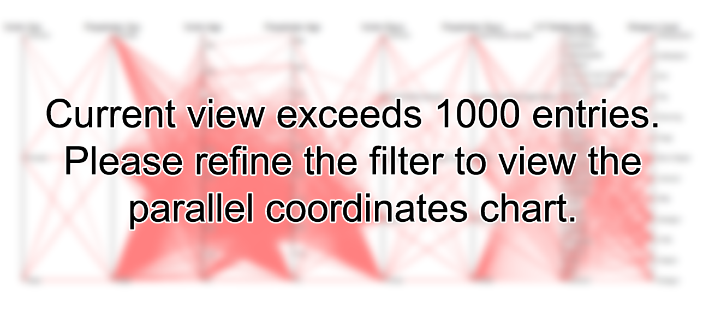

Ctrl-click or shift-click on states to select multiple states.
Ctrl-click on months to select multiple months. Shift-click on months to select a range.
Click on the Update button in the top-right to apply the selected filters.
Click on the Deselect button in the top-right to clear any active filters.
Parallel coordinates only show if there are less than 1000 entries to display.
The values coming out from the arcs represent the number of perpetrators in that category that have killed the victims in the connected category.
Each line represents a single incident in the current selection. Click and drag along each axis to highlight only lines crossing the selected region.
